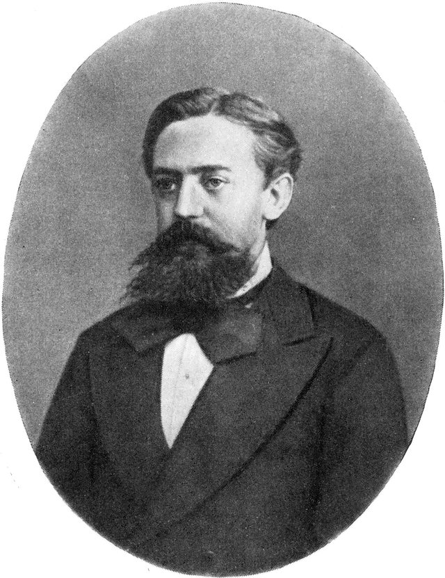
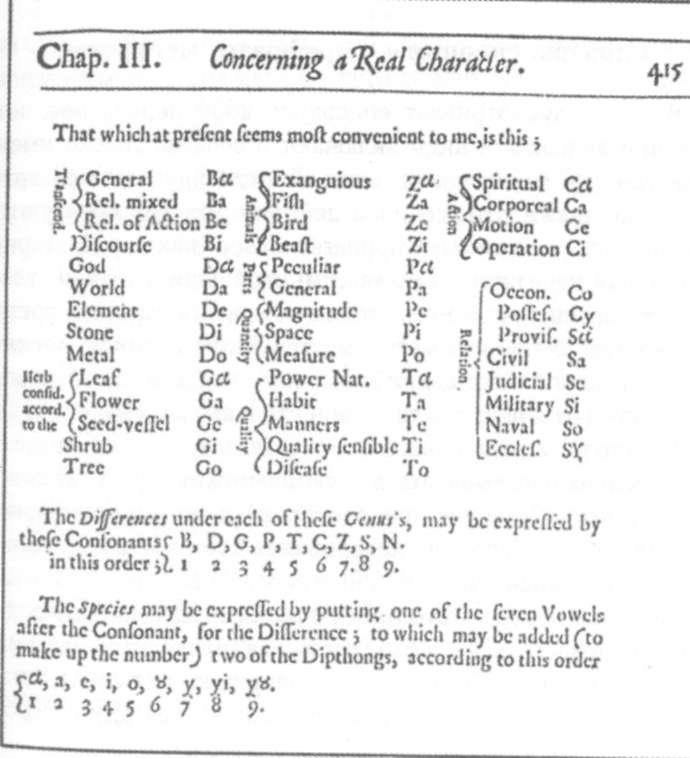

Trinity College Dublin
Coláiste na Tríonóide, Baile Átha Cliath
The University of Dublin
LIU44008 · Pragmatics II
Week 3
Information Theory
Dr. Thomas Stephen
School of Linguistic, Speech & Communication Sciences
Semester 1 · Michaelmas
This week
Key concepts: Surprisal and entropy, bits. Codes. Efficiency. Informativity.
Last week: meaning as coordination: agents, utilities, best response, equilibrium.
This week: meaning as information: how much a message tells you, and what it costs to send.
Today
Empirical
- Bits per letter
- Letters in binary
- The guessing game
- Morse code
- Letter frequencies
- Short words
- The 100 most common words
- Short forms in context
Historical
- Markov
- Shannon
- Weaver
- Bar-Hillel and Carnap
- Chomsky
Formal
- A two-syllable language
- Logarithms
- Surprisal
- Entropy
- Lexicon B is perfect
- The coding theorem
Applied
- Optional that
- Information rates
- Redundancy
This week
Readings
Shannon, Claude E. (1948). A Mathematical Theory of Communication. Bell System Technical Journal 27.
Gibson, Edward et al. (2019). How Efficiency Shapes Human Language. Trends in Cognitive Sciences 23.
Futrell, Richard & Michael Hahn (2022). Information Theory as a Bridge Between Language Function and Language Form. Frontiers in Communication 7.
I
Empirical
STRAND 01 / 04 · LIU44008 · Week 3
Entropy, Prediction and Efficiency
Bits per letter
A computer stores each letter of a text in 8 bits. How few bits per letter could English get by with?
Empirical
Letters in binary
Bits
Codes
For example
1
2
0, 1
2
4
00, 01, 10, 11
3
8
000, 001, …, 111
5
32
A 00000, B 00001, C 00010, …, Z 11001, space 11010
Each extra bit doubles the codes, so 26 letters and a space need 5 bits, giving 32 codes.
This code treats every letter alike: e costs as much as z, and what came before counts for nothing.
ASCII codes 128 characters in 7 bits (both cases, digits, punctuation and control codes) and stores each in an 8-bit byte. Unicode 18.0 (2026) numbers 172,808 characters, and its UTF-8 encoding gives ASCII characters 1 byte and the rest 2 to 4: á takes 2 and € takes 3.
ANSI X3.4-1967 (ASCII); The Unicode Standard, Version 18.0 (2026).
The guessing game
Guess the next letter. Spaces count.
Got first time: 0 of 53. Click a letter once to show it, twice to mark it got first time.
(1) Genesis 1:1, King James Version (1611).
Between 0.6 and 1.3 bits per letter, given about 100 letters of context (Shannon 1951). Roughly 1, against 5 for the plain binary code.
Empirical
Morse code
International Morse code, ITU-R M.1677-1 (2009), letters.
Empirical
Letter frequencies in English
Letters in running text, British National Corpus word-frequency lists (Kilgarriff 1996).
Empirical
Short words
Zipf's law of abbreviation. The more often a word is used, the shorter it tends to be. The commonest English words, the, of, and, to, a and in, have one to three letters.
Clipping. Frequent words wear down over time: television becomes telly, laboratory lab, examination exam and public house pub.
Bentz & Ferrer-i-Cancho (2016) find that frequency and length correlate negatively in every one of 986 languages, across 1,262 texts.
Zipf (1935), The Psycho-Biology of Language; Zipf (1949); Bentz & Ferrer-i-Cancho (2016).
Empirical
The 100 most common words
EnglishBritish National Corpus
the of and to a in that it is was I for on you he be with as by at have are this not but had his they from she which or we an there her were one do been all their has would will what if can when so no said who more about up them some could him into its then two out time like only my did other me your now over just may these new also people any know very see first well after should than where back how get most way down our made got
IrishCorpas Náisiúnta na Gaeilge
an a ar agus na go i ag le is sé tá sin bhí seo sa é de mar leis ó in ach atá bhfuil do ní raibh nó chun faoi ann ina nach eile gur as féin mé den aon don siad ná dá chur bheith san amach Gaeilge iad acu nuair sí dhéanamh ba á maith duine tú níos air ón rud chomh chuid fáil níl daoine mór dúirt anois í gach gan aige beidh mo isteach maidir lena amháin lá dul faoin sna idir nua trí mbeadh féidir mó teanga agam cur thabhairt chéile dtí liom áit
Average word length 3.4 letters for top 100. 4.7 in overall speech. 7.3 in the OED.
500,000 words in the OED so a naive encoding would need 19 bits per word.
British National Corpus word-frequency lists (Kilgarriff 1996); Corpas Náisiúnta na Gaeilge, corpas.ie (Bhreathnach et al. 2024), CC BY-SA 4.0.
Short forms in context
(2)Susan was very bad at algebra, so she hated …maths / mathematics
(3)Susan introduced herself to me as someone who loved …maths / mathematics
Empirical
Short forms in context
Mahowald et al. (2013) tested 40 pairs such as maths/mathematics and chimp/chimpanzee. Speakers chose the short form more often after a predictive context like (2) than after a neutral one like (3).
A predictable word can afford a short form. An unpredictable one gets the long form, which survives a misheard syllable.
ChatGPT and Vicuna, run on the same task, showed no such effect (Cai et al. 2023).
Mahowald, Fedorenko, Piantadosi & Gibson (2013), Cognition 126, items (2) and (3) adapted (math to maths); Cai et al. (2023), arXiv.
II
Historical
STRAND 02 / 04 · LIU44008 · Week 3
Markov, Shannon and Weaver
Historical
Markov

Andrey Markov
1856 – 1922
In 1913 Markov counted the first 20,000 letters of Pushkin's Eugene Onegin, classing each as a vowel or a consonant and recording what followed what.
43% of the letters are vowels. A vowel follows a vowel only 13% of the time and a consonant 66% of the time, so the odds for the next letter depend on the last one.
Markov (1913), on Eugene Onegin; figures as reported by Hayes (2013), American Scientist 101.
Historical
Shannon
Claude Shannon
1916 – 2001
A Mathematical Theory of Communication (1948) models communication as a source, a transmitter, a channel with noise, a receiver and a destination.
Information is counted in binary digits, “bits, a word suggested by J. W. Tukey.”
“These semantic aspects of communication are irrelevant to the engineering problem.”
Prediction and Entropy of Printed English (1951) estimated the entropy of English text.
Shannon (1948), Bell System Technical Journal 27; Shannon (1951), Bell System Technical Journal 30.
Historical
Weaver
Warren Weaver
1894 – 1978
The Mathematical Theory of Communication (1949) carries Weaver's introduction to Shannon's paper.
Weaver separates three levels of communication problem. A, technical: how accurately the symbols get across. B, semantic: how precisely they carry the intended meaning. C, effectiveness: how far the received meaning changes conduct as intended.
Level A = Phonetics/Phonology. Level B = Semantics. Level C = Pragmatics.
Weaver (1949), in Shannon & Weaver, The Mathematical Theory of Communication, University of Illinois Press.
Historical
Bar-Hillel and Carnap
Yehoshua Bar-Hillel
1915 – 1975
Rudolf Carnap
1891 – 1970
An Outline of a Theory of Semantic Information (1952) measures a sentence by the possibilities it rules out: the more it excludes, the more information it carries.
If \(p\) entails \(q\), \(p\) carries at least as much information. All outranks some, so Horn scales are information scales.
A contradiction rules everything out and so carries maximal information, which Floridi (2004) calls the Bar-Hillel–Carnap paradox.
Bar-Hillel & Carnap (1952), MIT Research Laboratory of Electronics, Technical Report 247; Floridi (2004).
Historical
Chomsky
Noam Chomsky
b. 1928
(4)Colorless green ideas sleep furiously.
(5)*Furiously sleep ideas green colorless.Chomsky 1957
Chomsky (1957). Neither sentence has occurred in English, so a statistical model rates them as equally “remote” from English. Only (4) is grammatical.
Pereira (2000). A word-class model trained on newspaper text makes (4) about 200,000 times more probable than (5).
Large language models have reopened the question of graded probability against categorical grammar (Piantadosi 2024; Fox & Katzir 2024).
Chomsky (1957), Syntactic Structures; Pereira (2000); Piantadosi (2024); Fox & Katzir (2024).
III
Formal
STRAND 03 / 04 · LIU44008 · Week 3
Codes and surprisal
Efficient Encoding
Formal
A two-syllable language
\(\tfrac14\)
\(\tfrac14\)
\(\tfrac14\)
\(\tfrac14\)
A community talks about four things, each as often as the others.
Its language has two syllables, ba and di. A word is any string of syllables.
Naive encoding
Give each object a name made of ba and di. Make the average name as short as possible. No name may be the start of another name.
\(\tfrac14\)
\(\tfrac14\)
\(\tfrac14\)
\(\tfrac14\)
Formal
Two syllables each
\(\tfrac14\)
baba
\(\tfrac14\)
badi
\(\tfrac14\)
diba
\(\tfrac14\)
didi
Lexicon A gives every name two syllables, so its average is 2.
No lexicon does better, since a one-syllable name blocks every word that starts with it. Give the blue square ba, and the others need diba, didiba and dididi: \(\tfrac14(1+2+3+3) = 2.25\).
Two binary choices pick out one of four: \(\log_2 4 = 2\).
Efficient encoding
Now assume the distribution of the objects is not even. Some are more likely to come up than others.
\(\tfrac12\)
\(\tfrac14\)
\(\tfrac18\)
\(\tfrac18\)
Formal
Two lexicons
Object
Frequency
Lexicon A
Lexicon B
\(\tfrac12\)
baba
ba
\(\tfrac14\)
badi
diba
\(\tfrac18\)
diba
didiba
\(\tfrac18\)
didi
dididi
Average length
2 syllables
\(\tfrac12\cdot1+\tfrac14\cdot2+\tfrac18\cdot3+\tfrac18\cdot3 = 1.75\)
Formal
The space of syllable strings
A word of \(n\) syllables uses up \(2^{-n}\) of the space: every longer string that starts with it is off limits.
Lexicon B: \(\tfrac12+\tfrac14+\tfrac18+\tfrac18 = 1\). The shares equal the frequencies. Nothing is left over.
Formal
The best lexicon
In lexicon B's speech, each syllable is ba or di at even odds, whatever came before. It sounds like a string of coin flips.
Coin flips cannot be shortened. Every string of \(n\) syllables is as likely as any other: probability \(2^{-n}\).
So in a perfect lexicon a word of \(n\) syllables has probability \(2^{-n}\). Turned round, probability \(\tfrac12\) gets 1 syllable, \(\tfrac14\) gets 2 and \(\tfrac18\) gets 3.
\[P = 2^{-n} \quad\Longleftrightarrow\quad n \text{ syllables}\]
After Shannon (1948), Part I.
Formal
Logarithms
Syllables
Possible words
For example
1
\(2\)
ba, di
2
\(4\)
baba, badi, diba, didi
3
\(8\)
bababa … dididi
10
\(1,024\)
Each syllable doubles the number of possible words: \(n\) syllables give \(2^n\).
Logarithms are the inverse of this. \(\log_2 N\) counts the doublings that make \(N\): \(\log_2 4 = 2\), \(\log_2 8 = 3\), \(\log_2 1024 = 10\). Equivalently, the halvings that bring \(N\) down to 1.
\[2^n = m \quad\Longleftrightarrow\quad \log_2 m = n\]
Formal
From probability to length
One of \(N\) equally likely options has probability \(P = \tfrac1N\). Picking it out takes \(\log_2 N = \log_2 \tfrac1P\) syllables.
Probabilities are at most 1, and the log of a number below 1 is negative: \(\log_2 \tfrac18 = -3\). So \(\log_2 \tfrac1P\) is usually written with a minus sign:
\[\log_2 \tfrac{1}{P} \;=\; -\log_2 P \qquad\quad -\log_2 \tfrac18 = 3\]
Logs turn multiplying into adding: \(\log_2 (P \cdot Q) = \log_2 P + \log_2 Q\). Two fair coin flips: \(\tfrac12 \cdot \tfrac12 = \tfrac14\), and \(1 + 1 = 2\).
Formal
Surprisal
Surprisal is \(-\log_2 P(x)\), measured in bits: the number of times you halve the possibilities to reach \(x\).
\(\tfrac12\): 1 bit. \(\tfrac14\): 2 bits. \(\tfrac18\): 3 bits. \(\tfrac1{1024}\): 10 bits.
The word the makes up about 6% of English running text and carries about 4 bits. A word used once in a million carries about 20.
Frequency of the: British National Corpus word-frequency lists (Kilgarriff 1996).
Formal
Entropy
\[H(X) = \sum_x P(x)\,\big(-\log_2 P(x)\big)\]
Each bar is as wide as an object's probability and as tall as its surprisal, so the total area is the entropy: \(H = 1.75\) bits, lexicon B's average length.
Four equally frequent objects give 2 bits. A distribution in which one object nearly always comes up gives close to 0.
Shannon (1948), Part I, § 6.
Formal
Calculating entropy
With equal frequencies, each object has probability \(\tfrac14\) and surprisal 2 bits: \(H = \tfrac14\cdot2+\tfrac14\cdot2+\tfrac14\cdot2+\tfrac14\cdot2 = 2\) bits.
With unequal frequencies, each object's surprisal is weighted by its probability and the results are added.
Object
\(P(x)\)
\(-\log_2 P(x)\)
\(P(x)\cdot(-\log_2 P(x))\)
\(\tfrac12\)
1
\(\tfrac12\cdot 1 = 0.5\)
\(\tfrac14\)
2
\(\tfrac14\cdot 2 = 0.5\)
\(\tfrac18\)
3
\(\tfrac18\cdot 3 = 0.375\)
\(\tfrac18\)
3
\(\tfrac18\cdot 3 = 0.375\)
Sum
\(H = 0.5+0.5+0.375+0.375 = 1.75\) bits
Formal
Lexicon B is perfect
Object
\(P(x)\)
Surprisal
Lexicon A
Lexicon B
\(\tfrac12\)
1
baba 2
ba 1
\(\tfrac14\)
2
badi 2
diba 2
\(\tfrac18\)
3
diba 2
didiba 3
\(\tfrac18\)
3
didi 2
dididi 3
Average
\(H = 1.75\)
2
1.75
Lexicon B gives each object exactly its surprisal in syllables, so its average equals the entropy. No lexicon averages less: B cannot be beaten.
Lexicon A wastes a quarter of a syllable per word here. With equal frequencies it was perfect, with an average of 2 and an entropy of 2.
Formal
Surprisal in context
\[P(w_1 \dots w_n) = P(w_1)\,P(w_2 \mid w_1)\cdots P(w_n \mid w_1 \dots w_{n-1})\]
\[-\log_2 P(w_1 \dots w_n) = \sum_i -\log_2 P(w_i \mid w_1 \dots w_{i-1})\]
Logs turn the product into a sum, so surprisals add up across a sentence. In The children went outside to play, the word play costs few bits; hibernate in the same place would cost many.
Surprisal is relative to a model of the context: Shannon's guessers, a corpus count, a language model.
Formal
The coding theorem
Shannon (1948). No code averages fewer than \(H\) bits per symbol. Some code gets as close to \(H\) as you like, by coding long stretches at once.
Piantadosi, Tily & Gibson (2011). Word length tracks average surprisal in context better than frequency, across 10 languages.
Shannon (1948), Theorem 9; Piantadosi, Tily & Gibson (2011), PNAS 108.
Formal
Other notations
This moduleAlso written
\(-\log_2 P(x)\)surprisal
\(\log_2 \tfrac{1}{P(x)}\), \(I(x)\), \(h(x)\) self-information, information content
bitslogarithms base 2
nats, with \(\ln\) one nat is about 1.44 bits; the base only rescales
\(H(X)\)entropy
\(H(P)\), \(H(p_1,\dots,p_n)\)
\(P(x)\)probability
\(p(x)\), \(\Pr(x)\), \(p_x\)
IV
Applied
STRAND 04 / 04 · LIU44008 · Week 3
Information in use
With speakers, listeners, and languages
Optional that
(6)My boss thinks (that) I am crazy.
(7)My boss confirmed (that) we are crazy.
Applied
Uniform information density
Jaeger (2010). In conversational English, speakers say that more often when a clause is hard to predict from the verb. Think usually takes a clause; confirm usually takes a noun phrase.
Uniform Information Density. Speakers spread information evenly across the signal. That announces a surprising clause one word early and flattens the peak.
Jaeger (2010), Cognitive Psychology 61; examples (6) and (7) as cited in Meister et al. (2021).
Applied
Information rates
Information rate is bits per syllable times syllables per second.
Dense syllables are spoken slowly and light ones fast. Vietnamese carries 8.0 bits a syllable at 5.3 syllables a second, and Japanese 5.0 bits at 8.0 a second.
Coupé, Oh, Dediu & Pellegrino (2019), Science Advances 5; per-language means from the authors' data.
Applied
Redundancy
(8)Y cn prbbly rd ths sntnc wtht th vwls.
(9)These two dogs are barking.plural marked four times
(10)na cailíní móra
Redundancy is signal beyond what the message strictly needs. Strip some of it out and the message still gets through.
Spelling a word over a bad line as B for Bravo, or a pilot reading an instruction back, adds redundancy so that the message survives noise.
Applied
Redundancy and Entropy
\[\text{redundancy} = 1 - \frac{H}{H_{\max}}\]
\(H_{\max}\): the entropy if every symbol were equally likely
For English letters and the space, \(H_{\max} = \log_2 27 \approx 4.75\) bits.
Shannon (1948) puts the redundancy of English at about 50%, counting patterns up to about eight letters long. Roughly half of a text is forced by the language and half is free choice.
Over long contexts English carries about 1 bit a letter (Shannon 1951), a redundancy of \(1 - \tfrac{1}{4.75} \approx 0.8\). Lexicon B has none.
Shannon (1948), Part I, § 7; Shannon (1951).
Applied
Wilkins's taxonomy
Wilkins (1668), An Essay towards a Real Character, and a Philosophical Language, p. 415.
Applied
Wilkins's own table

Wilkins (1668) lists the forty genera and their syllables on p. 415.
A difference adds a consonant, B D G P T C Z S N for 1 to 9, and a species adds a vowel, α a e i o ŏ y yi yŏ for 1 to 9.
(11) Zi ‘beast’, Zit difference 5, ‘dog-like beast’, Zitα species 1, ‘dog’.
Go ‘tree’, Gob difference 1, ‘pomiferous tree’, Gobα species 1, ‘apple’.
Wilkins (1668), p. 415; scan from Wikimedia Commons, public domain.
Applied
Wilkins's philosophical language
The pomiferous trees share genus Go and difference b, and one vowel picks out the species.
(12)
apple
gobα
[gobɒ]
pear
goba
[gobæ]
orange
goby
[gobʌ]
fig
gobo
[gobo]
pomegranate
gobŏ
[gobu]
In a noisy market an apple and an orange differ only in the last vowel, and missing it may get you a pear or a fig. English apple and orange sound nothing alike, and the context restores a lost syllable.
Wilkins himself wrote Gαde ‘barley’ where he meant Gαpe ‘tulip’ (Eco 1995).
Wilkins (1668); forms and pronunciations from the digitised Essay (aidaneid.github.io); Eco (1995), The Search for the Perfect Language.